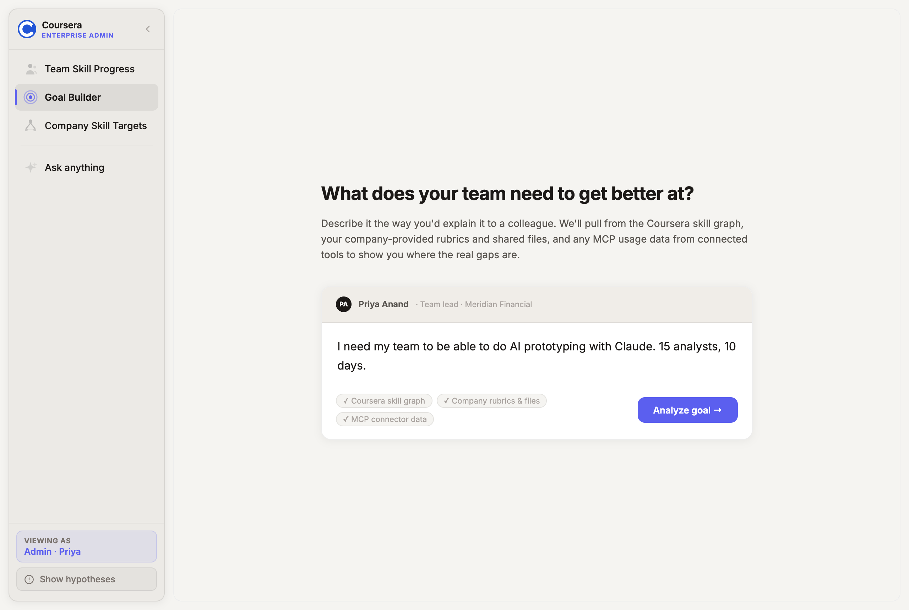
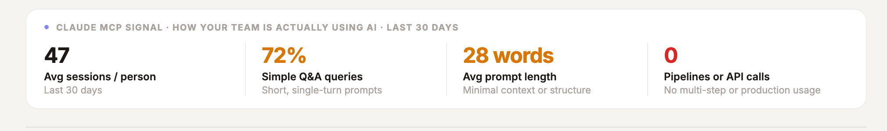
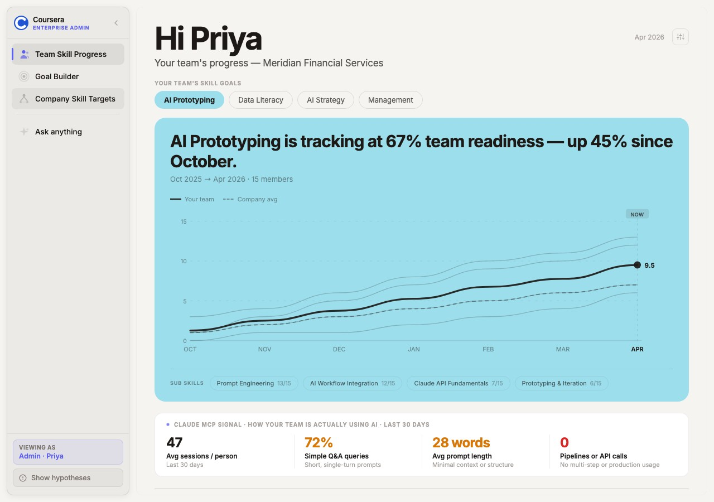
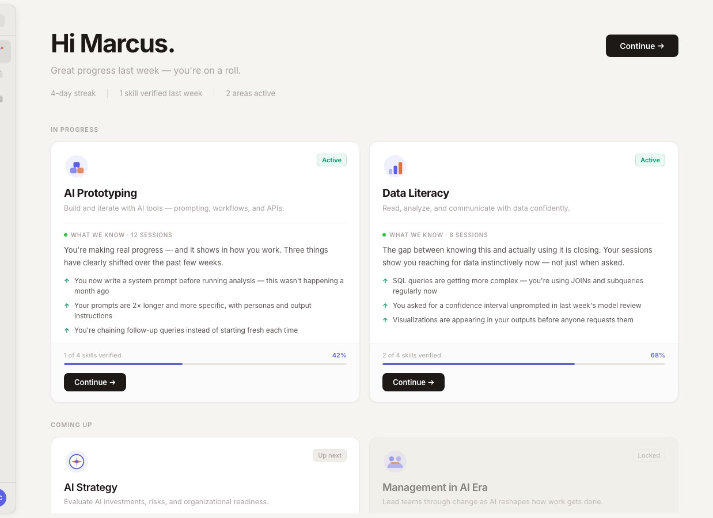
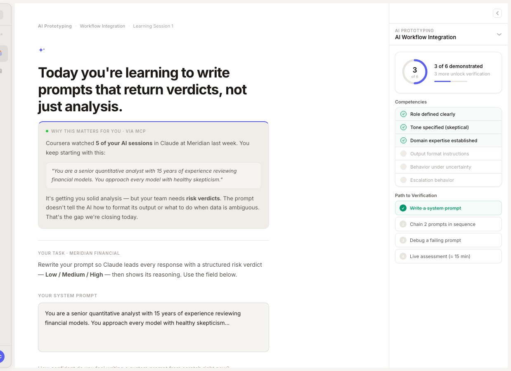
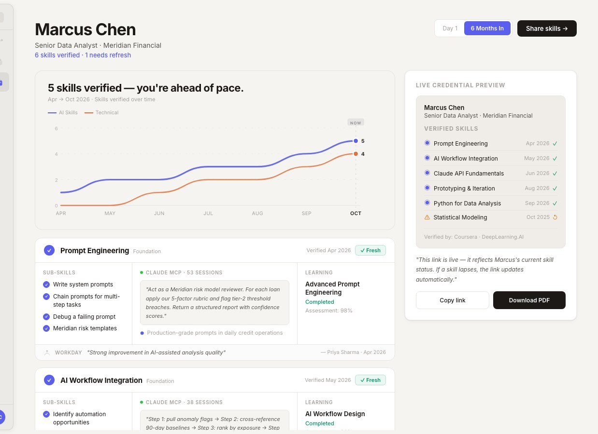
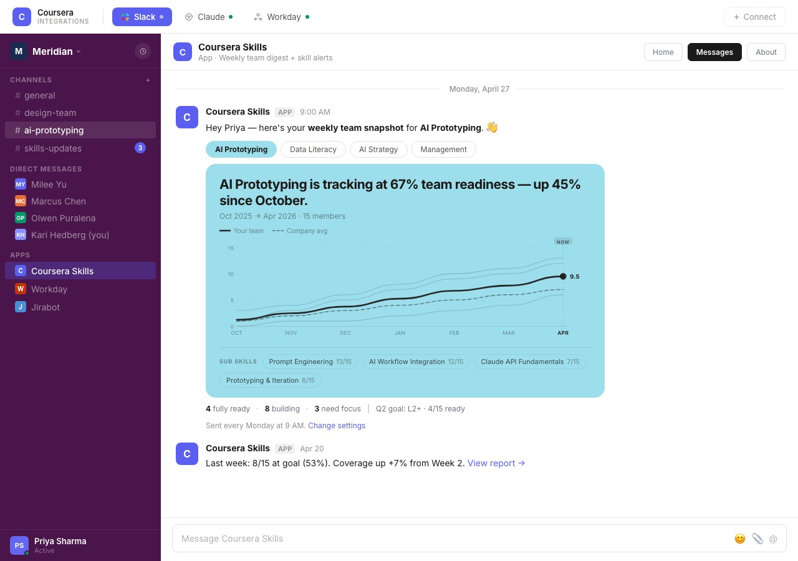
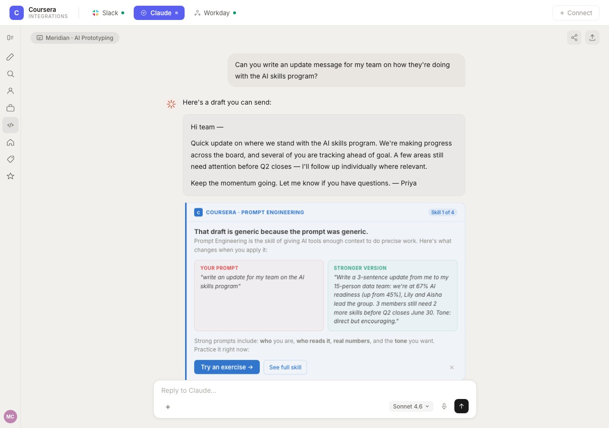
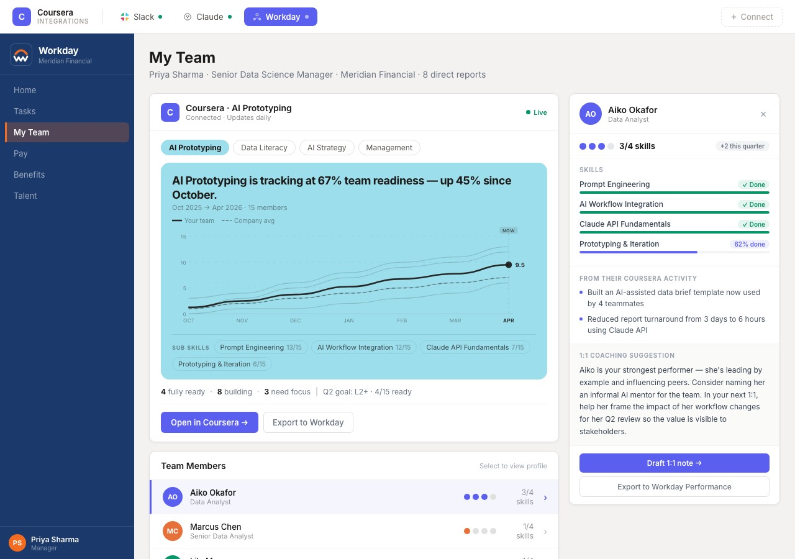

Three prototypes exploring skill intelligence at every layer — the organization, the learner, and the tools people already use every day.
Exploration 01
The admin layer — build the map, then let behavior fill it in
L&D admins stop managing course catalogs and start managing a living skill graph. They define what good looks like at every role and level, connect the MCP signals relevant to their org, and watch behavioral evidence populate the picture — in real time, without a survey in sight.
Step 01 · Set the target
Admins describe what the team needs to achieve — in plain language. Coursera pulls from the skill graph, company rubrics, and MCP usage data to map the real gaps and generate a targeted plan. No browsing. No guessing.

Step 02 · See how the team actually works
These aren't self-reported scores. This is a live readout of how a 15-person team is actually using AI tools at work — pulled directly from Claude sessions over the last 30 days. The gaps write themselves.


Step 03 · Track readiness over time
Org skill goals become trackable targets — broken down by skill, sub-skill, and team member. The graph shows your team vs. company average over time. Admins can drill into any node to see who's ready, who has a gap, and what behavioral evidence the system is drawing on.
Exploration 02
The learner layer — a plan that adapts in real time to how you actually work
The learner's plan isn't assigned — it emerges from behavioral signals across their own tools. Every recommendation is justified with a specific observation. Learning is triggered by the gap, not the calendar. Verification happens through demonstrated behavior. The credential updates as they work.

Step 01 · Ground truth for the learner
Every card in Marcus's plan is grounded in something Coursera actually observed. Not a course someone thought he should take. Behavioral signals from Claude, Cursor, and GitHub build a live picture of where he is right now — and what's worth working on next.
Step 02 · Learning at the moment of the gap
When Coursera notices a recurring pattern — prompts that are solid but missing output format instructions — it surfaces the right lesson with full context intact. Not a generic course. A targeted session, justified by evidence, delivered at the exact moment it's relevant.

Step 03 · Verified through doing
Skills aren't certified by a test — they're verified through demonstrated behavior in real tools. Marcus's wallet updates live as evidence accumulates across sessions. Each entry is backed by MCP session data, not a multiple-choice score. The link is live — if a skill lapses, the credential reflects it.

Exploration 03
Skills intelligence where work already happens — IC to CEO
The most powerful insight is the one that arrives at the right moment for the right person. These integrations bring skill data into Slack, Claude, and Workday — without adding another tool to anyone's workflow.



Why this is the bet